Converters: Comparators, DACs, and ADCs
Instruments 3.2
Imron Rosyadi
Learning Objectives
By the end of this session, you should be able to:
- Explain how comparators connect the analog world (sensors) to digital logic.
- Design simple alarm circuits using comparators (including open‑collector and hysteresis types).
- Compute outputs of digital‑to‑analog converters (DACs), both unipolar and bipolar, and select word length from resolution specs.
- Compute codes and errors for analog‑to‑digital converters (ADCs); distinguish unipolar vs bipolar operation.
- Compare successive‑approximation and dual‑slope ADC architectures and their conversion times.
- Analyze conversion‑time limits, and explain why we need sample‑and‑hold circuits.
- Describe and design basic frequency‑based conversion using counters and V‑to‑F converters / timers.
Big Picture: Why Converters?
Sensors usually output analog (voltages, currents).
Microcontrollers, FPGAs, and PLCs speak digital (bits, words).
We need two “translators”:
- ADC – Analog to Digital (sensor → computer).
- DAC – Digital to Analog (computer → actuator).
Typical process‑control loop
- Sensor → analog signal
- Signal conditioning (amp, filter)
- ADC → digital data
- Digital controller (μC / PLC)
- DAC → analog command
- Actuator (valve, motor drive, heater, etc.)
Important
Key idea: Every loop that uses a digital controller has at least one ADC and often a DAC.
Roadmap for This Session
- Comparators – the simplest analog/digital interface.
- DACs – digital words → analog voltages.
- ADCs – analog voltages → digital words (unipolar and bipolar).
- ADC architectures & timing – successive approximation, dual‑slope.
- Sample‑and‑hold – freezing the analog value so ADCs don’t get confused.
- Frequency‑based converters – when it’s easier to count pulses than measure volts.
3.1 Comparators – The Simplest Analog/Digital Bridge
A comparator compares two voltages and outputs a digital‑like signal.
- Inputs:
- \(V_a\) and \(V_b\) – analog voltages.
- Output:
- Logic‑level high (1) if one input is larger.
- Logic‑level low (0) otherwise.
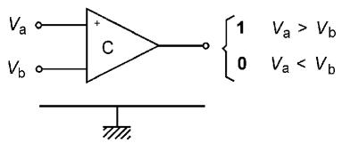
Note
Comparators are often used as:
- Alarm generators.
- Zero‑crossing detectors.
- Building blocks inside ADCs and DACs.
Comparator Operation
Let’s define:
- \(V_{in}\) – variable sensor voltage.
- \(V_{ref}\) – fixed reference / trip voltage.
Typical behavior (non‑inverting input as signal):
- If \(V_{in} > V_{ref}\) → output high (≈ logic “1”).
- If \(V_{in} < V_{ref}\) → output low (≈ logic “0”).

Example 7: Temperature & Pressure Alarm – Setup
Spec:
- Trigger alarm if
- Temperature \(T > 160^\circ\mathrm{C}\) and
- Pressure \(P > 10\ \mathrm{kPa}\).
Transducers:
- Temperature: \(V_T = (2.2\ \mathrm{mV} / {}^\circ\mathrm{C}) \cdot T\).
- Pressure: \(V_P = (0.2\ \mathrm{V} / \mathrm{kPa}) \cdot P\).
Goal: Design an alarm system using comparators and logic.
Tip
Think of each comparator as a “threshold detector” for a single variable. Then combine their outputs with logic gates (AND, OR).
Example 7: Alarm Design – Voltages and Logic
- Convert the temperature limit to volts:
\[ V_{T,\text{trip}} = (2.2\ \mathrm{mV/^\circ C})(160^\circ \mathrm{C}) = 0.352\ \mathrm{V} \]
- Convert the pressure limit to volts:
\[ V_{P,\text{trip}} = (0.2\ \mathrm{V/kPa})(10\ \mathrm{kPa}) = 2.0\ \mathrm{V} \]
- Use two comparators:
- Temp comparator: outputs 1 when \(V_T > 0.352\ \mathrm{V}\).
- Pressure comparator: outputs 1 when \(V_P > 2.0\ \mathrm{V}\).
- Use an AND gate to combine both conditions.
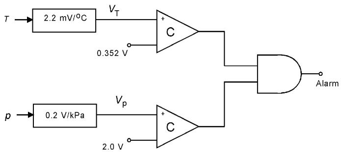
Open‑Collector Comparator Outputs
Many comparator ICs use an open‑collector output transistor.
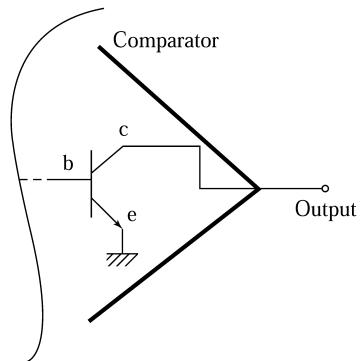
- The comparator’s output pin is the collector of an internal transistor.
- No internal pull‑up resistor.
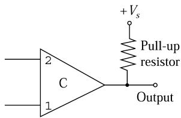
- You add an external pull‑up resistor to a supply \(V_s\).
- Output behavior:
- Internal transistor ON → output ≈ 0 V (logic 0).
- Transistor OFF → resistor pulls output up to \(V_s\) (logic 1).
Advantages:
- Can use a different voltage for logic output than comparator’s internal Vcc (e.g., drive 12 V relay with 5 V comparator).
- Can wire‑OR multiple outputs: tie open collectors together + one pull‑up → any output pulling low dominates.
Note
Open‑collector outputs behave like “can pull down, but not up”. Always check that you added the pull‑up if you see a “stuck” output.
Comparator “Jiggle” Problem – Noise Around Threshold
If the input signal is noisy or moves slowly through \(V_{ref}\):
- Small noise can repeatedly push \(V_{in}\) above and below \(V_{ref}\).
- Output toggles rapidly: “jiggles” or chatter.
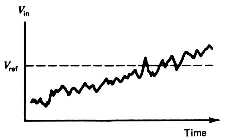
This is bad for:
- Alarm relays (chattering contacts).
- Interrupt lines to microcontrollers (too many events).
- Motor/valve control (rapid on–off cycling).
Hysteresis Comparator (Schmitt Trigger) – Concept
Solution: add hysteresis (a deadband window).
- Two thresholds instead of one:
- Upper threshold \(V_H\): trips output high.
- Lower threshold \(V_L\): trips output low.
- Once output changes state, you require a larger change in input to switch it back.
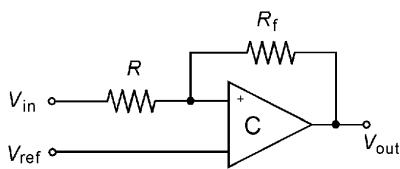
Hysteresis Comparator – Equations
With resistors \(R\) and feedback \(R_f\) (and \(R_f \gg R\)):
- Upper threshold (going up):
\[ V_H = V_{\text{ref}} \]
- Lower threshold (coming down):
\[ V_L = V_{\text{ref}} - \frac{R}{R_f} V_0 \]
- Hysteresis width (deadband):
\[ \Delta V_{\text{hyst}} = V_H - V_L = \frac{R}{R_f} V_0 \]

Tip
Design procedure:
- Choose desired deadband \(\Delta V_{\text{hyst}}\).
- Use $ (R/R_f) V_0 = V_{} $ to pick a reasonable \(R_f\), then compute \(R\).
Example: Tank Level with Splashing (Hysteresis Design)
Sensor: \(V = 20\ \mathrm{mV/cm} \cdot \text{level}\).
Specs:
- Comparator should go high (5 V) at level \(50\ \mathrm{cm}\).
- Level fluctuates by \(\pm 3\ \mathrm{cm}\) due to splashing.
- Nominal reference at 50 cm:
\[ V_{\text{ref}} = (20\ \mathrm{mV/cm})(50\ \mathrm{cm}) = 1.0\ \mathrm{V} \]
- Splash noise amplitude:
\[ \pm 3\ \mathrm{cm} \Rightarrow \Delta V_{\text{noise}} = (20\ \mathrm{mV/cm})(\pm 3) = \pm 60\ \mathrm{mV} \]
Total span = \(120\ \mathrm{mV}\). Choose deadband slightly larger: e.g., \(150\ \mathrm{mV}\).
- Design resistors:
\[ (R/R_f)(5\ \mathrm{V}) = 150\ \mathrm{mV} \Rightarrow R/R_f = 0.03 \]
Pick \(R_f = 100\ \mathrm{k\Omega}\) → \(R = 3\ \mathrm{k\Omega}\).
Use these in the circuit of Figure 10a.
Quick Interactive Check – Comparator Threshold
3.2 Digital‑to‑Analog Converters (DACs) – Concept
A DAC converts an n‑bit digital word into a proportional analog voltage.
- Input: \(b_1 b_2 \ldots b_n\) (LSB to MSB).
- Reference voltage: \(V_R\).
- Output: stepwise voltage \(V_{\text{out}}\).
Unipolar DAC (0 to near \(V_R\)):
\[ V_{\text{out}} = V_R \left[b_1 2^{-1} + b_2 2^{-2} + \dots + b_n 2^{-n}\right] \tag{5} \]
Alternative form using integer \(N\) (0 to \(2^n-1\)):
\[ V_{\text{out}} = \frac{N}{2^n} V_R \tag{6} \]
Note
Think of \(N/2^n\) as the fraction of full scale.
Unipolar DAC Range and Resolution
- Minimum output:
- \(N = 0\) → \(V_{\text{out}} = 0\).
- Maximum output:
- \(N = 2^n - 1\) →
\[ V_{\max} = \frac{2^n - 1}{2^n}V_R = \left(1 - 2^{-n}\right)V_R \]
Example:
- 4‑bit DAC:
\[ V_{\max} = (1 - 2^{-4})V_R = 0.9375 V_R \]
- 8‑bit DAC:
\[ V_{\max} \approx 0.9961 V_R \]
Resolution (step size):
\[ \Delta V_{\text{out}} = V_R 2^{-n} \tag{8} \]
Example: Simple 8‑bit DAC Output
8‑bit, \(V_R = 5.0\ \mathrm{V}\), input word \(10100111_2\).
- Compute \(N\):
\[ 10100111_2 = 167_{10} \]
- Use Equation (6):
\[ V_{\text{out}} = \frac{167}{256} \cdot 5.0 \approx 3.2617\ \mathrm{V} \]
Example 9: 10‑bit DAC with 10 V Reference
Given: 10‑bit DAC, \(V_R = 10.0\ \mathrm{V}\).
- Input = 0B5H \(= 0010110101_2\). Compute \(V_{\text{out}}\) using Equation (5).
\[ V_{\text{out}} = 10.0\left[2^{-3} + 2^{-5} + 2^{-6} + 2^{-8} + 2^{-10}\right] \]
\[ V_{\text{out}} = 10.0[0.1767578] \approx 1.7676\ \mathrm{V} \]
- Input = 20FH = \(527_{10}\). Use Equation (6):
\[ V_{\text{out}} = \frac{527}{1024} \cdot 10.0 \approx 5.1465\ \mathrm{V} \]
- What input \(N\) to get 6.5 V?
\[ N = 2^n \frac{V_{\text{out}}}{V_R} = 1024 \cdot \frac{6.5}{10} = 665.6 \]
We must use integers → cannot get exactly 6.5 V.
- \(N = 665\) → \(\approx 6.494\ \mathrm{V}\).
- \(N = 666\) → \(\approx 6.504\ \mathrm{V}\).
Warning
Important: Finite resolution → some target voltages are not exactly representable.
Bipolar DAC – Output Around Zero
Sometimes we need output in \(-V_{\text{max}}\) to \(+V_{\text{max}}\).
Typical bipolar DAC uses offset binary:
\[ V_{\text{out}} = \frac{N}{2^n} V_R - \frac{1}{2} V_R \tag{7} \]
- \(N = 0\) → \(V_{\text{out}} = -V_R/2\).
- \(N = 2^n - 1\) →
\[ V_{\text{out}}(\max) = \left(\frac{1}{2} - \frac{1}{2^n}\right)V_R \]
So positive side is slightly less than \(+V_R/2\).
Example 10: 10‑bit Bipolar DAC
10‑bit, bipolar, \(V_R = 5\ \mathrm{V}\).
- Inputs:
- 04FH = \(79_{10}\).
- 2A4H = \(676_{10}\).
- Use Equation (7):
For 79:
\[ V_{\text{out}} = \frac{79}{1024}(5) - \frac{5}{2} \approx -2.114\ \mathrm{V} \]
For 676:
\[ V_{\text{out}} = \frac{676}{1024}(5) - \frac{5}{2} \approx 0.801\ \mathrm{V} \]
- For zero output:
Solve \(0 = \frac{N}{1024}5 - \frac{5}{2}\) → \(N = 512 = 200\mathrm{H} = 1000000000_2\).
DAC Resolution Design Example
Spec: Find number of bits so that \(\Delta V_{\text{out}} \le 0.04\ \mathrm{V}\) with \(V_R = 10\ \mathrm{V}\).
Use Equation (8):
\[ \Delta V = V_R 2^{-n} \le 0.04 \]
\[ 0.04 = 10 \cdot 2^{-n} \Rightarrow 2^{-n} = 0.004 \]
Solve for \(n\):
\[ n = \frac{\log(10) - \log(0.04)}{\log 2} \approx 7.97 \]
So choose \(n = 8\).
Check:
\[ \Delta V_{\text{out}} = 10 \cdot 2^{-8} = 0.03906\ \mathrm{V} \]
DAC Block Diagram and Features
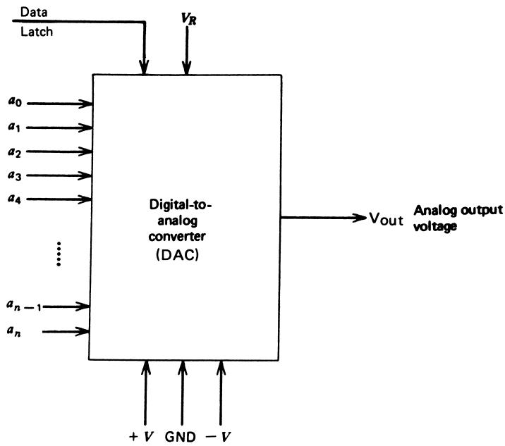
Key characteristics:
- Digital input: parallel \(n\)-bit word (often TTL/CMOS).
- Power supply: typically ±12 to ±18 V (or single supply).
- Reference supply: sets scale and resolution.
- Analog output: stepped voltage (possibly bipolar).
- Offset trim: to set true zero output for zero code.
- Data latch: hold output value until new word is latched.
- Conversion time: almost instantaneous (just amplifier settling, μs range).
Ladder DAC Internal Structure
Most integrated DACs use an R–2R ladder network.
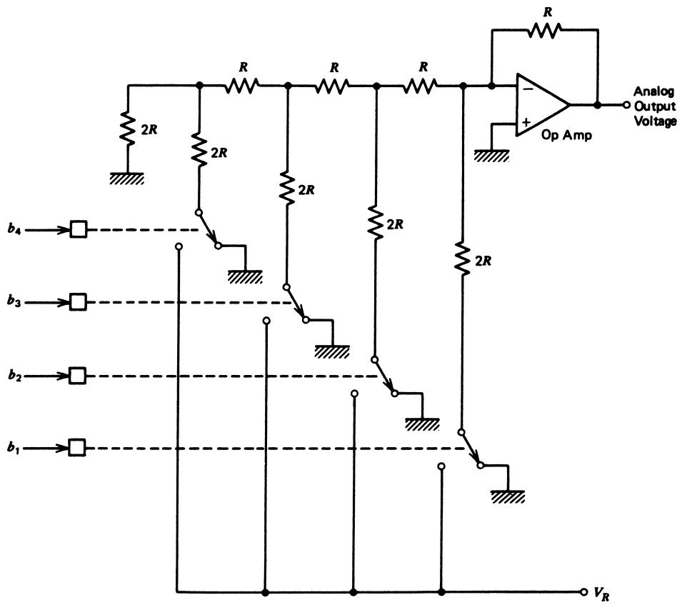
- Each bit controls a switch connecting a ladder node to \(V_R\) or ground.
- Network ensures each bit contributes the correct weight \(2^{-k}\).
- Output is typically buffered by an op‑amp.
You usually treat this as a black box and use Equation (5) or (6).
Example 12: DAC Controlling a Valve
Valve opening is linear from 0 to 10 V. Controlled by 8‑bit DAC fed by microcomputer.
(a) Reference for full‑open at 10 V?
Full‑scale digital code: \(11111111_2 = 255_{10}\). Maximum DAC fraction: \((2^8 - 1)/2^8 = 0.9961\).
\[ 10\ \mathrm{V} = 0.9961 V_R \Rightarrow V_R = \frac{10}{0.9961} \approx 10.039\ \mathrm{V} \]
(b) Percentage valve opening per 1‑bit change?
Resolution:
\[ \Delta V_{\text{out}} = V_R 2^{-8} \approx 10.039/256 \approx 0.0392\ \mathrm{V} \]
Percentage of full scale (10 V):
\[ \% = \frac{0.0392}{10} \cdot 100 \approx 0.392\% \]
3.3 Analog‑to‑Digital Converters (ADCs) – Concept
An ADC performs the inverse of the DAC:
- Input: analog voltage \(V_{\text{in}}\) (plus a reference \(V_R\)).
- Output: digital word \(b_1 b_2 \ldots b_n\).
Unipolar ADC relationship:
\[ b_1 2^{-1} + b_2 2^{-2} + \dots + b_n 2^{-n} \le \frac{V_{\text{in}}}{V_R} \tag{9} \]
- Left side = fraction represented by digital code.
- Right side = scaled input \(V_{\text{in}}/V_R\).
- ADC chooses the largest code that does not exceed \(V_{\text{in}}/V_R\).
ADC Quantization Step and Uncertainty
ADC output can only change in increments of \(2^{-n}\) in the normalized fraction.
So the voltage uncertainty for a given code is:
\[ \Delta V = V_R 2^{-n} \tag{10} \]
Same as DAC resolution.
Interpretation:
- For a given code, actual \(V_{\text{in}}\) is known only within a bin of width \(\Delta V\).
- Lower bins: \(0\) to \(\Delta V\), etc.
- Top bin: \(V_R (1 - 2^{-n})\) to just below \(V_R\).
Example 13: ADC Range and Resolution from Temperature Sensor
Sensor: \(V = 0.02\ \mathrm{V/^\circ C} \cdot T\). Measure 0 to \(100^\circ\mathrm{C}\) with \(0.1^\circ\mathrm{C}\) resolution.
- Max voltage at 100°C:
\[ (0.02\ \mathrm{V/^\circ C})(100^\circ\mathrm{C}) = 2.0\ \mathrm{V} \]
So choose \(V_R = 2.0\ \mathrm{V}\).
- Required voltage change for 0.1°C:
\[ \Delta V_{\text{required}} = (0.1^\circ\mathrm{C})(0.02\ \mathrm{V/^\circ C}) = 2\ \mathrm{mV} \]
We need \(\Delta V = V_R 2^{-n} \le 2\ \mathrm{mV}\).
\[ 0.002 = 2 \cdot 2^{-n} \Rightarrow 2^{-n} = 0.001 \Rightarrow n \approx 9.996 \approx 10 \]
So choose 10 bits.
Actual resolution:
\[ \Delta V = 2 \cdot 2^{-10} \approx 0.00195\ \mathrm{V} \]
Temperature resolution ≈ \(0.0975^\circ\mathrm{C}\), slightly better than required.
ADC Code Limits – Min and Max
- If output is all zeros:
- We know \(0 \le V_{\text{in}} < V_R 2^{-n}\).
- If output is all ones:
- We know \(V_{\text{in}} \ge V_R(1 - 2^{-n})\).
Using example above:
- 10‑bit, \(V_R = 2\ \mathrm{V}\):
- \(V_L = 0\).
- Top code (all ones) step at
\[ V_{\text{step}} = V_R (1 - 2^{-10}) \approx 1.9980\ \mathrm{V} \]
→ corresponds to about \(99.90^\circ\mathrm{C}\).
Warning
So, in practice, we measure slightly less than full physical range (e.g., 0.1°C to 99.9°C).
Fast ADC Code Computation – Equation (11)
Instead of binary fractions, we can directly compute integer code \(N\):
\[ N = \mathrm{INT}\left(\frac{V_{\text{in}}}{V_R} 2^n\right) \tag{11} \]
- \(\mathrm{INT}()\) is truncate, not round: \(\mathrm{INT}(3.99) = 3\).
Then convert \(N\) to binary or hex.
Example 14: 5‑bit ADC for 3.127 V Input
5‑bit ADC, \(V_R = 5\ \mathrm{V}\), \(V_{\text{in}} = 3.127\ \mathrm{V}\).
Normalized value:
\[ \frac{3.127}{5} = 0.6254 \]
Binary fraction method (step by step) yields code \(10100_2\).
Using Equation (11):
\[ N = \mathrm{INT}\left(\frac{3.127}{5} \cdot 2^5\right) = \mathrm{INT}(20.0128) = 20 \]
20 in hex = 14H = \(10100_2\).
Example 15: 10‑bit ADC, Find Code and Back‑Compute Voltage
10‑bit, \(V_R = 2.500\ \mathrm{V}\).
(a) Input 1.45 V → find output code
\[ N = \mathrm{INT}\left(\frac{1.45}{2.5} 2^{10}\right) = \mathrm{INT}(593.92) = 593 \]
593 in hex = 251H.
(b) Given output 1B4H → find possible input range
1B4H = \(436_{10}\).
Center of bin:
\[ V_{\text{in,mid}} = \frac{436}{1024} \cdot 2.5 \approx 1.06445\ \mathrm{V} \]
Bin width:
\[ \Delta V = V_R 2^{-n} = 2.5 / 1024 \approx 0.00244\ \mathrm{V} \]
So valid input for code 1B4H:
\[ 1.06445\ \mathrm{V} \le V_{\text{in}} < 1.06689\ \mathrm{V} \]
Bipolar ADC: Offset Binary Equation
Bipolar ADC (offset binary mapping) formula:
\[ N = \mathrm{INT}\left[\left(\frac{V_{\text{in}}}{V_R} + \frac{1}{2}\right) 2^n\right] \tag{12} \]
- \(V_{\text{in}} = -V_R/2\) → \(N = 0\).
- \(V_{\text{in}} = 0\) → \(N \approx 2^{n-1}\).
- \(V_{\text{in}} \approx +V_R/2\) → \(N \approx 2^n - 1\) (slightly less due to step size).
Example mapping for 8‑bit, \(V_R = 10\ \mathrm{V}\):
- \(-5.000\ \mathrm{V} \Rightarrow 00000000_2\).
- \(-0.039\ \mathrm{V} \Rightarrow 01111111_2\).
- \(0.000\ \mathrm{V} \Rightarrow 10000000_2\).
- \(+0.039\ \mathrm{V} \Rightarrow 10000001_2\).
- \(+4.961\ \mathrm{V} \Rightarrow 11111111_2\).
Example: Bipolar 8‑bit ADC with 5 V Reference
8‑bit, bipolar, \(V_R = 5.00\ \mathrm{V}\).
(a) Input \(V_{\text{in}} = -0.85\ \mathrm{V}\).
\[ N = \mathrm{INT}\left[\left(\frac{-0.85}{5} + 0.5\right) 256\right] = \mathrm{INT}(84.48) = 84 \]
84 = 54H = \(01010100_2\).
(b) Input \(V_{\text{in}} = +1.5\ \mathrm{V}\).
\[ N = \mathrm{INT}\left[\left(\frac{1.5}{5} + 0.5\right) 256\right] = \mathrm{INT}(204.8) = 204 \]
204 = CCH = \(11001100_2\).
(c) For output 72H (\(114_{10}\)), solve for \(V_{\text{in}}\):
\[ V_{\text{in}} = \frac{N}{2^n}V_R - \frac{V_R}{2} = \frac{114}{256} 5.0 - 2.5 \approx -0.2734\ \mathrm{V} \]
Valid actual input: \([-0.2734,\ -0.2539)\ \mathrm{V}\).
ADC Block Diagram and Timing
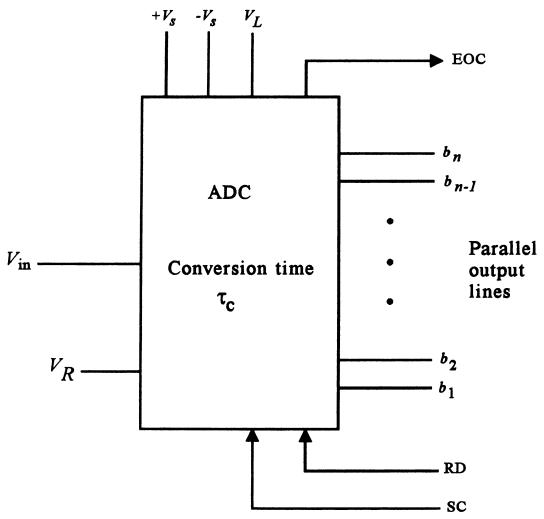
Key points:
- Analog input – should remain constant during conversion.
- Power supplies – analog ± rails + digital Vcc.
- Reference voltage – sets range/resolution.
- Digital outputs – \(n\) parallel bits, often tri‑state.
- Control lines:
- SC (Start Convert).
- EOC (End Of Convert).
- RD (Read / output enable).
Conversion is not instantaneous → we need to respect conversion time in system design.
Typical ADC Data Acquisition Timing
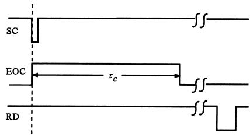
Sequence:
- MCU drives SC low → ADC begins conversion.
- ADC asserts EOC high during conversion.
- When conversion complete → EOC falls.
- MCU waits for EOC, then asserts RD low → digital output appears on lines.
ADC Architectures: Successive Approximation
Parallel‑feedback (Successive Approximation) ADC:
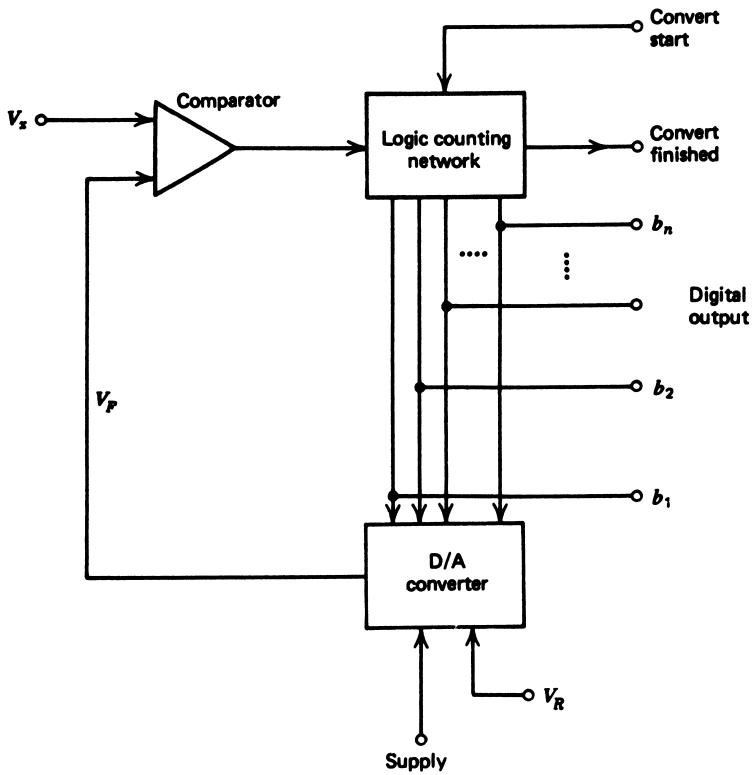
Components:
- Internal DAC.
- Comparator comparing input \(V_x\) with DAC output \(V_F\).
- Successive approximation register (SAR) logic to set/test bits.
Operation:
- Start with all bits 0.
- Set MSB = 1, compute \(V_F\).
- If \(V_x \ge V_F\), keep bit = 1; else reset to 0.
- Move to next bit; repeat until LSB.
Conversion time ≈ constant: ~1–5 μs/bit.
Example 17: 4‑bit SAR ADC for 3.217 V, Vref = 5 V
4‑bit, \(V_R = 5\ \mathrm{V}\), \(V_x = 3.217\ \mathrm{V}\).
- Test bit 1 (MSB): \(b_1 = 1\).
\[ V_F = 5 \cdot 2^{-1} = 2.5\ \mathrm{V} \]
\(V_x > 2.5\) → keep \(b_1 = 1\).
- Test bit 2: set \(b_2 = 1\).
\[ V_F = 5(2^{-1} + 2^{-2}) = 3.75\ \mathrm{V} \]
\(V_x < 3.75\) → reset \(b_2 = 0\).
- Test bit 3: set \(b_3 = 1\).
\[ V_F = 5(2^{-1} + 2^{-3}) = 3.125\ \mathrm{V} \]
\(V_x > 3.125\) → keep \(b_3 = 1\).
- Test bit 4 (LSB): set \(b_4 = 1\).
\[ V_F = 5(2^{-1} + 2^{-3} + 2^{-4}) = 3.4375\ \mathrm{V} \]
\(V_x < 3.4375\) → reset \(b_4 = 0\).
Final code: 1010₂.
Dual‑Slope Ramp ADC
Used in digital multimeters and precise instruments.
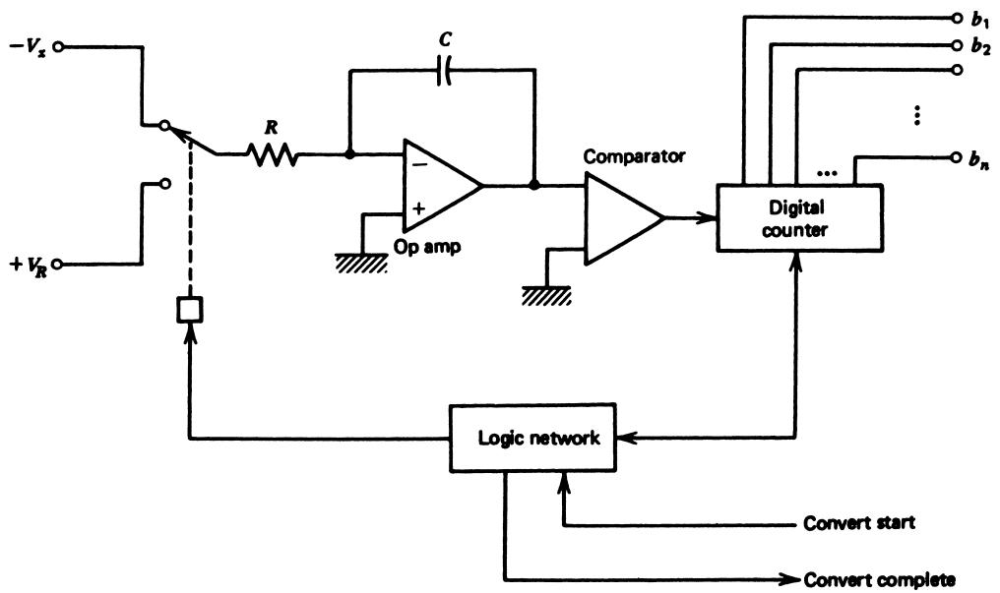
Steps:
- Integrate input \(V_x\) for fixed time \(T_1\). Output at integrator:
\[ V_1 = \frac{1}{RC}\int_0^{T_1} V_x\,dt = \frac{T_1}{RC} V_x \tag{14} \]
- Switch input to \(-V_R\); integrator ramps back down.
\[ V_2 = V_1 - \frac{1}{RC}\int_0^{t_x} V_R\,dt = \frac{T_1}{RC} V_x - \frac{t_x}{RC} V_R \tag{16} \]
- When \(V_2 = 0\), comparator stops counter at time \(t_x\):
\[ 0 = \frac{T_1}{RC} V_x - \frac{t_x}{RC} V_R \Rightarrow V_x = \frac{t_x}{T_1} V_R \tag{17} \]
Key: Output code ∝ \(t_x\), independent of R and C tolerances.
Dual‑Slope Timing Example (Example 18)
Given:
- \(R = 100\ \mathrm{k\Omega}\), \(C = 0.01\ \mu\mathrm{F}\).
- \(V_R = 10\ \mathrm{V}\).
- Integrate \(V_x = 6.8\ \mathrm{V}\) for \(T_1 = 10\ \mathrm{ms}\).
- First ramp (input \(V_x\)):
\[ V_1 = \frac{T_1 V_x}{RC} = \frac{10\ \mathrm{ms} \cdot 6.8\ \mathrm{V}}{(100\ \mathrm{k\Omega})(0.01\ \mu\mathrm{F})} = 6.8\ \mathrm{V} \]
- Second ramp (input \(-V_R\)), solve for \(t_x\):
\[ t_x = \frac{T_1 V_x}{V_R} = \frac{10\ \mathrm{ms} \cdot 6.8}{10} = 6.8\ \mathrm{ms} \]
Total conversion time = \(T_1 + t_x = 16.8\ \mathrm{ms}\).
Comparison: Much slower than SAR (tens of microseconds) but very accurate and noise‑immune.
Example 19: Interface Sensor to ADC with Amplifier
Sensor: \(6.5\ \mathrm{mV/^\circ C}\) up to \(100^\circ\mathrm{C}\). ADC: 6‑bit unipolar, \(V_R = 10\ \mathrm{V}\).
- Design amplifier so that 100°C → ADC full scale (code 111111).
Sensor output at 100°C:
\[ V_{\text{sensor,max}} = (6.5\ \mathrm{mV/^\circ C})(100^\circ\mathrm{C}) = 0.65\ \mathrm{V} \]
ADC max code (all ones) fraction:
\[ \sum_{k=1}^6 2^{-k} = 1 - 2^{-6} = 0.984375 \]
So ADC full‑scale input:
\[ V_x = 10 \cdot 0.984375 = 9.84375\ \mathrm{V} \]
Required amplifier gain:
\[ \text{gain} = \frac{9.84375}{0.65} \approx 15.14 \]
Implement with op‑amp (Figure 18).
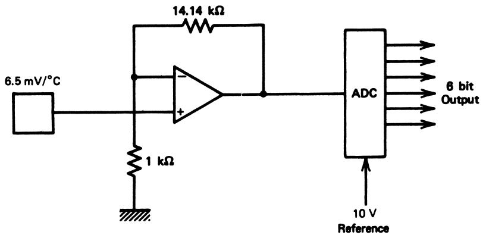
- Resolution in °C:
LSB voltage at ADC:
\[ \Delta V_{\text{ADC}} = V_R 2^{-6} = 10 \cdot 2^{-6} = 0.15625\ \mathrm{V} \]
This corresponds to sensor change:
\[ \Delta V_{\text{sensor}} = \frac{0.15625}{15.14} \approx 0.01032\ \mathrm{V} \]
Temperature resolution:
\[ \Delta T = \frac{0.01032\ \mathrm{V}}{6.5\ \mathrm{mV/^\circ C}} \approx 1.59^\circ\mathrm{C} \]
Conversion‑Time Limits – Dynamic Signals
ADC assumes input is constant during conversion time \(\tau_c\).
If \(V_{\text{in}}(t)\) changes too fast, conversion error > 1 LSB.
Condition:
\[ \left|\frac{dV_{\text{in}}}{dt}\right| \le \frac{\Delta V}{\tau_c} = \frac{V_R}{2^n \tau_c} \tag{18} \]
Example: 10‑bit ADC, \(V_R = 5\ \mathrm{V}\), \(\tau_c = 20\ \mu\mathrm{s}\).
\[ \left|\frac{dV_{\text{in}}}{dt}\right| \le \frac{5}{2^{10} \cdot 20 \times 10^{-6}} \approx 244\ \mathrm{V/s} \]
For a sinusoid \(V_{\text{in}} = V_0 \sin(\omega t)\),
\[ \left|\frac{dV_{\text{in}}}{dt}\right|_{\max} = \omega V_0 \]
so, with \(V_0 = V_R\):
\[ \omega \le \frac{V_R}{2^n \tau_c V_0} = \frac{1}{2^n \tau_c} \]
Frequency limit:
\[ f \le \frac{\omega}{2\pi} \approx 7.8\ \mathrm{Hz} \tag{20} \]
Surprising: a “fast” 20 μs, 10‑bit ADC can only accurately track ~7.8 Hz full‑scale sinusoid without additional circuitry.
Example 20: Triangular Wave Limit
8‑bit, bipolar ADC, \(V_R = 5\ \mathrm{V}\), \(\tau_c = 12\ \mu\mathrm{s}\).
Input: triangular wave from −1 V to +1 V (peak‑to‑peak 2 V).
Slope of triangle:
- Period \(T\), frequency \(f\).
- Change 2 V over \(T/4\):
\[ \frac{dV_{\text{in}}}{dt} = \frac{2}{T/4} = \frac{8}{T} = 8f \]
Use Equation (18):
\[ 8f \le \frac{V_R}{2^n \tau_c} = \frac{5}{2^8 \cdot 12\times10^{-6}} = 1627.6 \]
So
\[ f \le 203.5\ \mathrm{Hz} \]
Sample‑and‑Hold (S/H) – Freezing the Input
To remove the conversion‑time limitation, we hold the input constant during conversion.
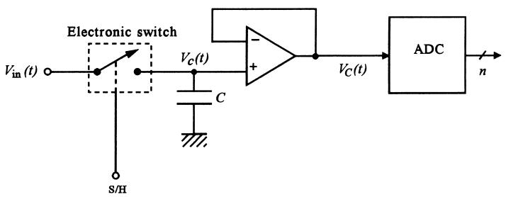
Operation:
- Sample mode: switch closed → capacitor tracks input \(V_C(t) \approx V_{\text{in}}(t)\).
- Hold mode: switch opens at time \(t_s\).
- Capacitor “freezes” at \(V_C = V_{\text{in}}(t_s)\).
- ADC converts while \(V_C\) is (almost) constant.
- After conversion (EOC), switch closes again → resume tracking.
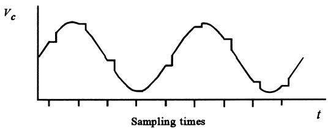
Real S/H Circuit and Nonidealities
Practical S/H often uses FET switch + op‑amp buffer.
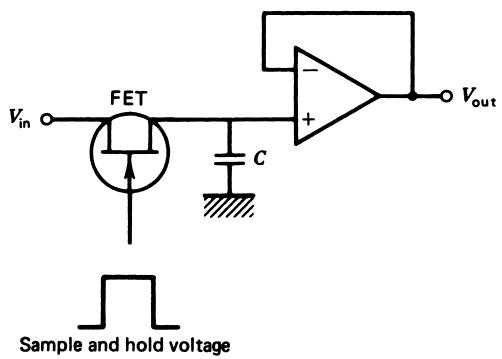
Nonideal effects:
- Sampling mode: series resistance \(R_s + R_{\text{ON}}\) + capacitor → low‑pass filter.
- Hold mode: leakage via \(R_{\text{OFF}}\) and buffer input \(R_{VF}\) → capacitor droop.
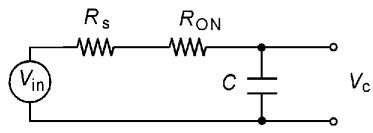
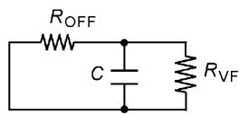
S/H Bandwidth and Droop Equations
Sampling bandwidth (−3 dB point):
\[ f_c = \frac{1}{2\pi (R_s + R_{\text{ON}}) C} \tag{21} \]
Hold droop time constant:
Equivalent parallel of \(R_{\text{OFF}}\) and \(R_{VF}\):
\[ \tau_D = \frac{R_{\text{OFF}} R_{VF}}{R_{\text{OFF}} + R_{VF}} C \tag{22} \]
To keep droop voltage within 1 LSB during conversion:
\[ \frac{V_C}{\tau_D} \le \frac{V_R}{2^n \tau_c} \tag{23} \]
Rearrange for \(\tau_D\):
\[ \tau_D \ge 2^n \tau_c \cdot \frac{V_C}{V_R} \tag{24} \]
Use \(V_C \approx V_R\) for worst case → design capacitor \(C\) accordingly.
Example 21: Design S/H Capacitor and Find Bandwidth
Given:
- 12‑bit ADC, unipolar, \(\tau_c = 30\ \mu\mathrm{s}\).
- \(R_{\text{ON}} = 10\ \Omega\).
- \(R_{\text{OFF}} = 10\ \mathrm{M\Omega}\).
- \(R_{VF} = 10\ \mathrm{M\Omega}\).
- Source resistance \(R_s = 50\ \Omega\).
- Capacitor for acceptable droop
Worst case \(V_C = V_R\):
\[ \tau_D \ge 2^{12} \cdot 30 \times 10^{-6} = 0.12288\ \mathrm{s} \]
From Equation (22):
\[ \tau_D = \frac{(10^7)(10^7)}{10^7 + 10^7} C = 5 \times 10^6 C \]
Set \(\tau_D \ge 0.12288\):
\[ 5 \times 10^6 C \ge 0.12288 \Rightarrow C \ge 0.025\ \mu\mathrm{F} \]
- Sampling cutoff frequency using Equation (21):
\[ f_c = \frac{1}{2\pi (R_s + R_{\text{ON}}) C} = \frac{1}{2\pi (60)(0.025\times10^{-6})} \approx 108\ \mathrm{kHz} \]
So S/H can track up to ≈108 kHz in sample mode with this capacitor.
Throughput: Sample + Convert + Acquire
Two more S/H timing parameters:
- Acquisition time \(\tau_{\text{acq}}\): time to settle to within 1 LSB after going from hold → sample.
- Aperture time \(\tau_{\text{ap}}\): delay from hold command to the actual instant the sample is held.
Total time per sample:
\[ T = \tau_c + \tau_{\text{acq}} + \tau_{\text{ap}} \tag{25} \]
Maximum sample rate:
\[ f_{\max} = \frac{1}{T} \]
Example: \(\tau_c = 40\ \mu\mathrm{s}\), \(\tau_{\text{acq}} = 4\ \mu\mathrm{s}\), \(\tau_{\text{ap}} = 50\ \mathrm{ns}\).
\[ T = 40 + 4 + 0.05\ \mu\mathrm{s} = 44.05\ \mu\mathrm{s} \Rightarrow f_{\max} \approx 22.7\ \mathrm{kHz} \]
Microprocessor‑Compatible ADCs
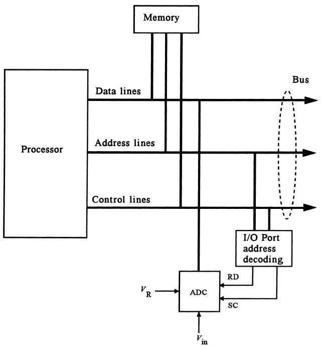
- ADC lines connect to data bus via tri‑state outputs.
- Address decoding logic:
- Generates SC and RD.
- Receives EOC.
- To CPU, ADC looks like a memory‑mapped I/O device.
Software flow:
- Write to control register → SC.
- Poll or wait for EOC.
- Read from ADC’s data address.
3.4 Frequency‑Based Converters – Counting Pulses
Alternative conversion method: convert analog → frequency and then count pulses.
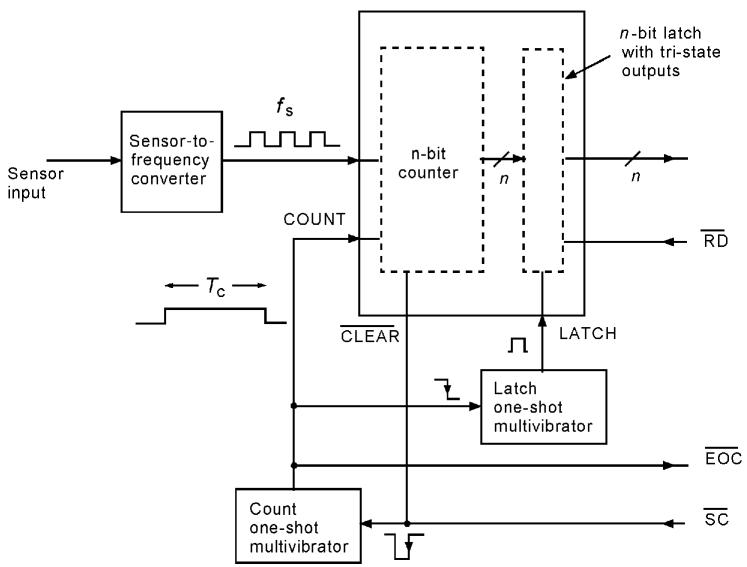
- Sensor signal drives V‑to‑F converter → square wave \(f_s\).
- Counter counts edges for fixed count time \(T_c\).
- After \(T_c\), latch count and signal EOC to CPU.
If counter has \(n\) bits, maximum count is \(2^n - 1\). For maximum frequency \(f_{\max}\):
\[ T_c = \frac{2^n - 1}{f_{\max}} \tag{26} \]
Count for any \(f\): \(N = f T_c\).
Example 23: 8‑bit Frequency‑Based ADC
Sensor frequency range: 2.0 kHz to 20 kHz. Use 8‑bit counter.
- Compute \(T_c\) so that \(f_{\max}\) → full count (255):
\[ T_c = \frac{2^8 - 1}{20\,000} = \frac{255}{20,000} \approx 12.75\ \mathrm{ms} \]
- For \(f = 2.0\ \mathrm{kHz}\):
\[ N = f T_c = 2000 \cdot 0.01275 \approx 25.5 \Rightarrow 25_{10} = 00011001_2 \]
Voltage‑to‑Frequency Conversion – LM331
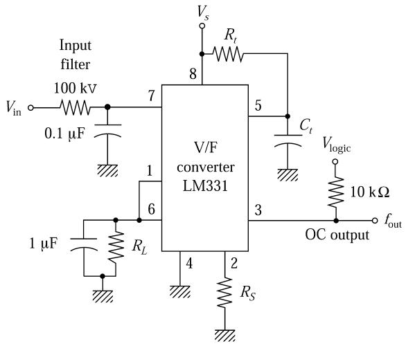
Approximate formula:
\[ f_{\text{out}} = \frac{R_S}{R_L} \cdot \frac{1}{R_t C_t} \cdot \frac{V_{\text{in}}}{2.09} \tag{27} \]
- \(R_S\): scaling resistor (10–20 kΩ, often trimmable).
- \(R_L\): load resistor (~100 kΩ).
- \(R_t, C_t\): timing resistor and capacitor.
- \(V_{\text{in}}\): control voltage (0–5 V typical).
Design example: 0–5 V → 0–10 kHz.
Set \(R_S = 15\ \mathrm{k\Omega}\), \(R_L = 100\ \mathrm{k\Omega}\).
\[ 10,000 = \frac{15k}{100k} \cdot \frac{5}{2.09} \cdot \frac{1}{R_t C_t} \Rightarrow R_t C_t \approx 3.59\times 10^{-5}\ \mathrm{s} \]
Pick \(C_t = 0.01\ \mu\mathrm{F}\) → \(R_t \approx 3.59\ \mathrm{k\Omega}\).
Frequency from R or C – 555 Timer
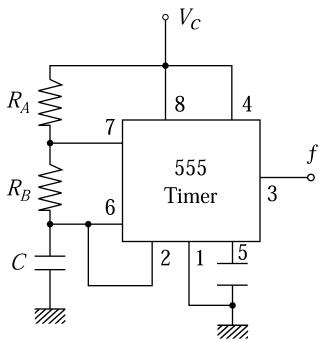
Astable 555 oscillator frequency:
\[ f = \frac{1}{0.693 (R_A + 2 R_B) C} \tag{28} \]
If sensor is a variable resistor or capacitor, you can map sensed quantity → frequency.
Then use a counter + fixed gate time to get a digital representation.
Example 24: Light Sensor to Frequency‑Based 10‑bit ADC
Resistor sensor: 36 kΩ at 1.5 W/m², 4 kΩ at 10 W/m². Use 555 from Figure 27, 10‑bit counter, count time \(T_c = 10\ \mathrm{ms}\).
- Want full‑scale count 1023 at maximum frequency (R_A = 4 kΩ).
\[ f_{\max} = \frac{1023}{0.01} = 102,300\ \mathrm{Hz} \]
- Using Equation (28) with \(R_A = 4\ \mathrm{k\Omega}\):
\[ 102,300 = \frac{1}{0.693 (4k + 2 R_B) C} \]
Choose \(R_B = 2\ \mathrm{k\Omega}\), solve for C:
\[ C \approx 0.0018\ \mu\mathrm{F} \]
- For low light (R_A = 36 kΩ):
\[ f_{\min} = \frac{1}{0.693 (36k + 4k) \cdot 0.0018\ \mu\mathrm{F}} \approx 20,042\ \mathrm{Hz} \]
Count:
\[ N = 20,042 \cdot 0.01 \approx 200 \]
Plot \(N\) vs light intensity → nonlinear because \(f \propto 1/(R_A + 2R_B)\).
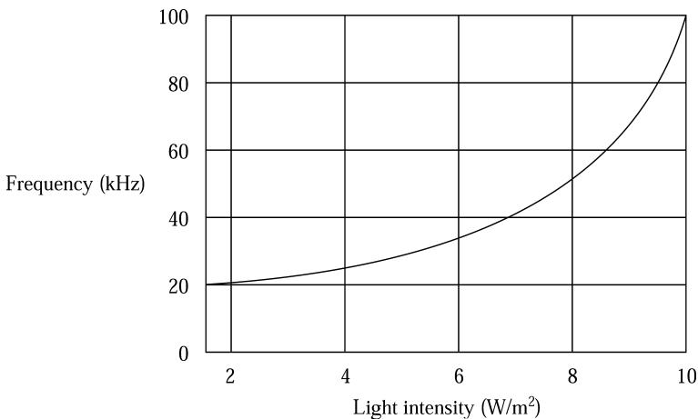
Interactive DAC/ADC Playground
Use this block to explore how \(n\), \(V_R\), and \(V_{\text{in}}\) control DAC/ADC behavior.
Summary / Key Points
- Comparators convert analog comparisons into digital alarms; hysteresis prevents noise‑induced chatter.
- Open‑collector outputs need pull‑up resistors and allow level shifting and wired‑OR logic.
- DACs:
- Unipolar: \(V_{\text{out}} = (N/2^n)V_R\).
- Bipolar: \(V_{\text{out}} = (N/2^n)V_R - V_R/2\).
- Resolution: \(\Delta V = V_R 2^{-n}\).
- ADCs:
- Unipolar: \(N = \mathrm{INT}((V_{\text{in}}/V_R)2^n)\).
- Bipolar (offset binary): \(N = \mathrm{INT}((V_{\text{in}}/V_R + 1/2)2^n)\).
- Quantization error ±½ LSB; codes cover ranges, not single values.
- Successive‑approximation ADCs are fast with predictable conversion time; dual‑slope ADCs are slower but precise and good for DMMs.
- Conversion‑time limits constrain how fast input can change; sample‑and‑hold circuits freeze the value during conversion, but add bandwidth and droop constraints.
- Frequency‑based converters (V‑to‑F + counter, 555) are simple and robust for many process‑control applications, though generally slower than SAR ADCs.
Formula Summary
Comparators with Hysteresis
- Upper threshold: \(V_H = V_{\text{ref}}\).
- Lower threshold:
\[ V_L = V_{\text{ref}} - \frac{R}{R_f} V_0 \]
- Hysteresis width:
\[ \Delta V_{\text{hyst}} = \frac{R}{R_f} V_0 \]
DACs
- Unipolar:
\[ V_{\text{out}} = V_R \sum_{k=1}^n b_k 2^{-k} = \frac{N}{2^n} V_R \]
- Bipolar (offset binary):
\[ V_{\text{out}} = \frac{N}{2^n} V_R - \frac{1}{2} V_R \]
- Resolution:
\[ \Delta V_{\text{out}} = V_R 2^{-n} \]
ADCs
- Unipolar relationship:
\[ b_1 2^{-1} + \dots + b_n 2^{-n} \le \frac{V_{\text{in}}}{V_R} \]
- Direct code formula:
\[ N = \mathrm{INT}\left(\frac{V_{\text{in}}}{V_R} 2^n\right) \]
- Quantization step:
\[ \Delta V = V_R 2^{-n} \]
- Bipolar (offset binary):
\[ N = \mathrm{INT}\left[\left(\frac{V_{\text{in}}}{V_R} + \frac{1}{2}\right) 2^n\right] \]
Dynamic Constraints & S/H
- Max input slope during conversion:
\[ \left|\frac{dV_{\text{in}}}{dt}\right| \le \frac{V_R}{2^n \tau_c} \]
- For sinusoid full scale \(V_0 = V_R\):
\[ f \le \frac{1}{2^{n+1}\pi \tau_c} \]
- S/H sampling cutoff:
\[ f_c = \frac{1}{2\pi (R_s + R_{\text{ON}}) C} \]
- S/H droop time constant:
\[ \tau_D = \frac{R_{\text{OFF}} R_{VF}}{R_{\text{OFF}} + R_{VF}} C \]
- Droop constraint:
\[ \tau_D \ge 2^n \tau_c \frac{V_C}{V_R} \]
- Throughput:
\[ T = \tau_c + \tau_{\text{acq}} + \tau_{\text{ap}}, \quad f_{\max} = \frac{1}{T} \]
Frequency‑Based Conversion
- Count time for n‑bit counter with max frequency \(f_{\max}\):
\[ T_c = \frac{2^n - 1}{f_{\max}} \]
- Count for any frequency:
\[ N = f T_c \]
- LM331 V‑to‑F:
\[ f_{\text{out}} = \frac{R_S}{R_L} \cdot \frac{1}{R_t C_t} \cdot \frac{V_{\text{in}}}{2.09} \]
- 555 astable:
\[ f = \frac{1}{0.693 (R_A + 2R_B) C} \]